How to display the values obtained by sensors on DS3604 through Node-RED work flow (Chirpstack)

How to display the values obtained by sensors on DS3604 through Node-RED work flow (Chirpstack）
| Version | Update Time | Description | Author |
| 1.0 | Feb. 10, 2026 | Initial version | Luis |
Description
We need the CO₂ concentration values measured by the AM308 in realtime to be displayed on the DS3604. UG65 and ChirpStack V4 are used for the gateway and NS.
Node-RED Implementation Logic:
1. MQTT in: Get the AM308 all data upload with the uplink topic from chirpstack.
2. Function: Use a function module to filter out the value of the co2 and construct the corresponding base64 command.
3. MQTT out: Send the command with the downlink topic to DS3604.
Requirement
Milesight Gateway: UG65
Sensor: AM308, DS3604
NS: ChirpStack V4
Configuration
Step 1: Enable the ChirpStack-v4 type on the gateway, add the Chirpstack server IP and MQTT port.
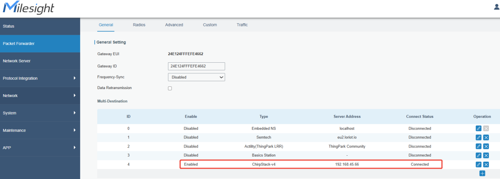 |
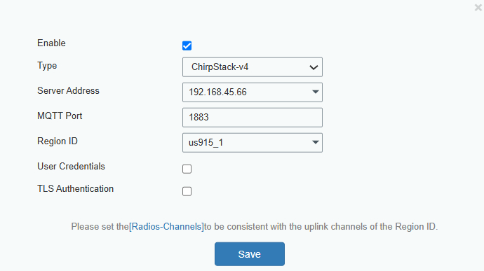
Step 2: Add the gateway, AM308 and DS3604 on the Chirpstack.
The specific operation steps are provided in the link below.
Gateway: ChirpStack-Milesight Gateway Integration : IoT Support
Sensor: ChirpStack V4 Integration : IoT Support
Obtain the device EUI (Gateway ID), set the packet forwarder type, and add the gateway to ChirpStack
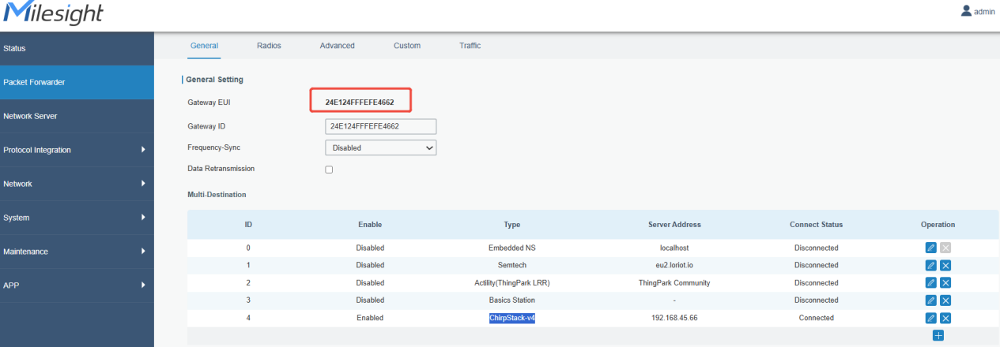
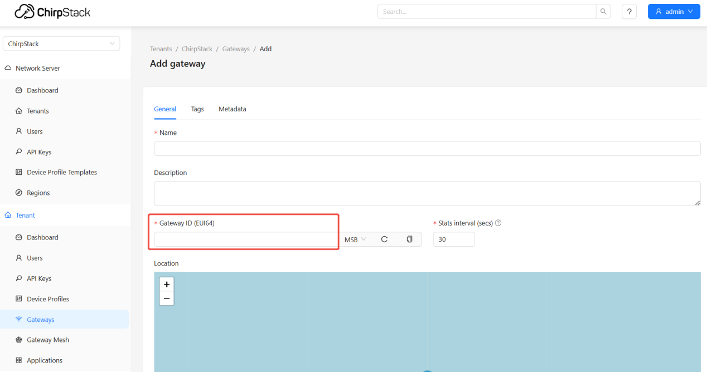
Add device profile, copy the decoder of AM308 and DS3604, and paste to codec area.
Download link of decoder:
GitHub - Milesight-IoT/SensorDecoders: Payload Codec for Milesight Sensors
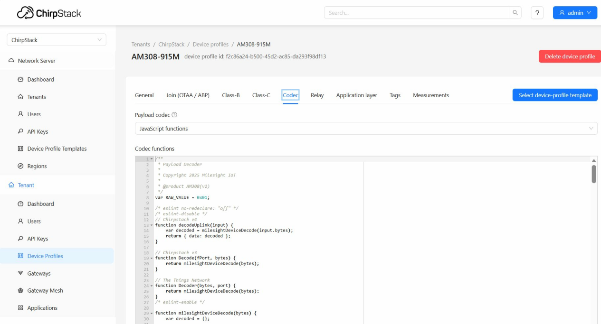
Add application and AM308, DS3604 sensors below it.
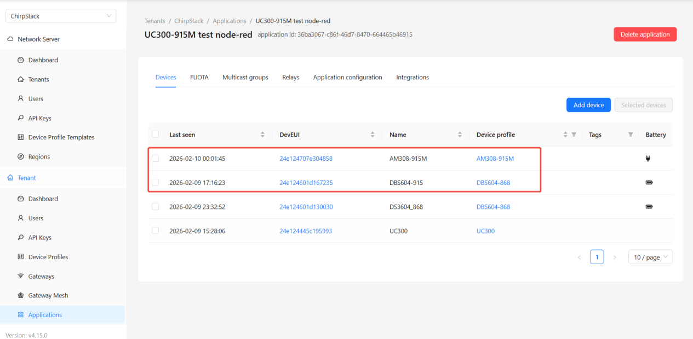
Make sure the gateway and sensors can connect to cirpstack.
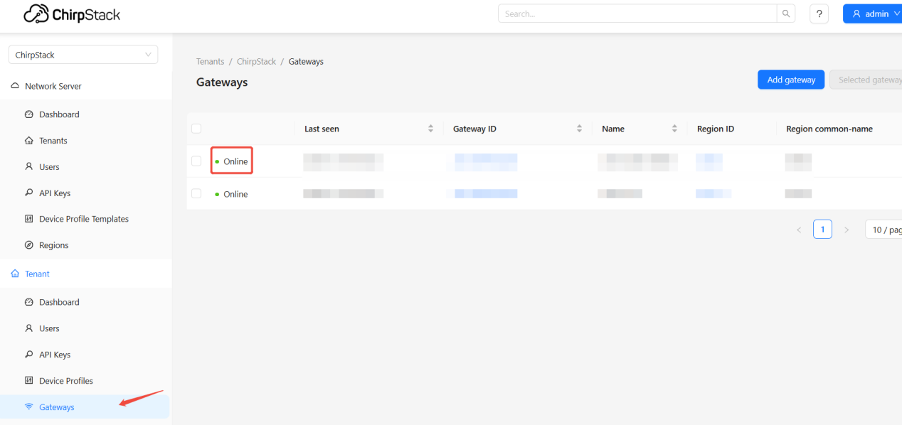
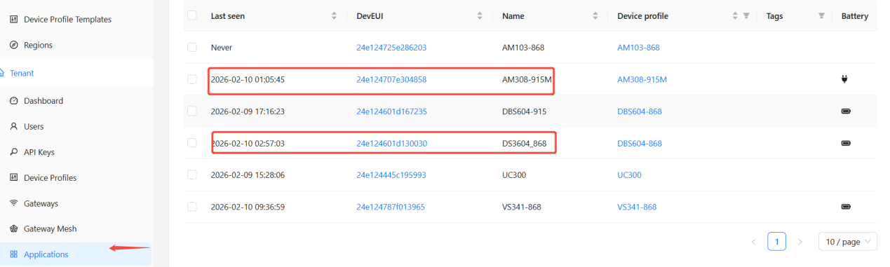
Step 3: Import the work flow
Open the Node-RED portal
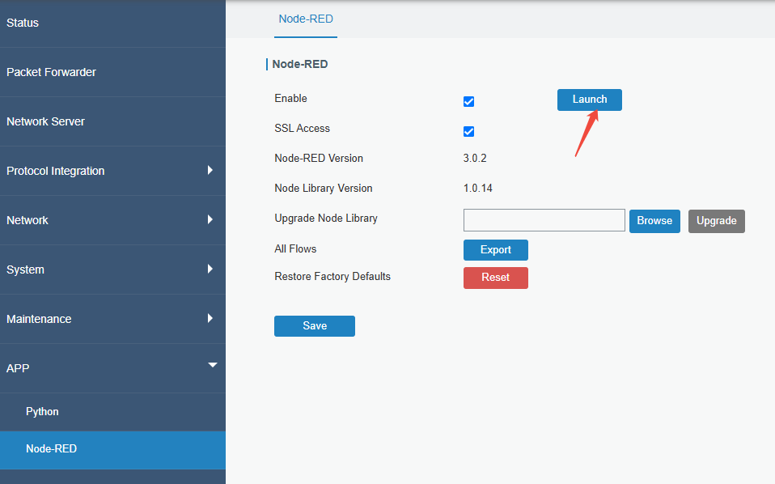
Import the work flow
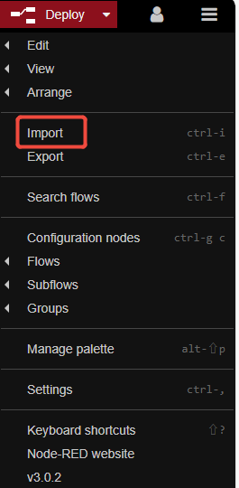
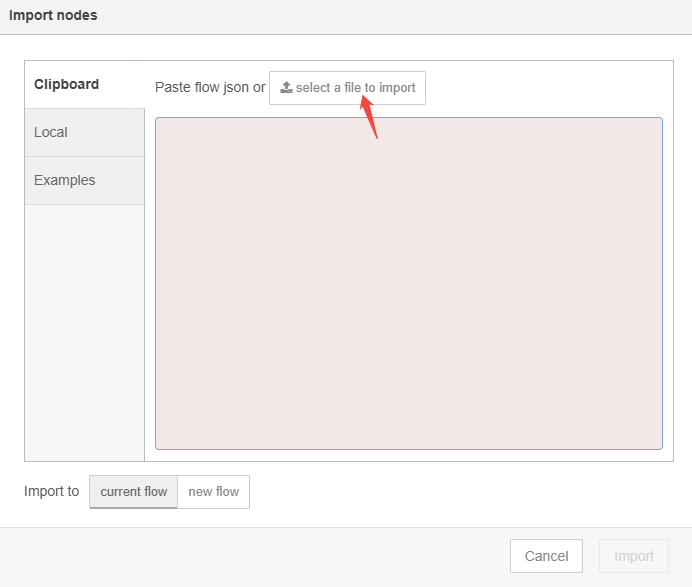
The work flow is like this:
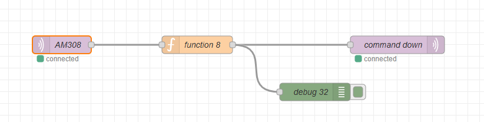
Step 4: MQTT in module configuration
1. Obtain MQTT uplink and downlink topic format, Chirpstack document online:
MQTT - ChirpStack open-source LoRaWAN® Network Server documentation
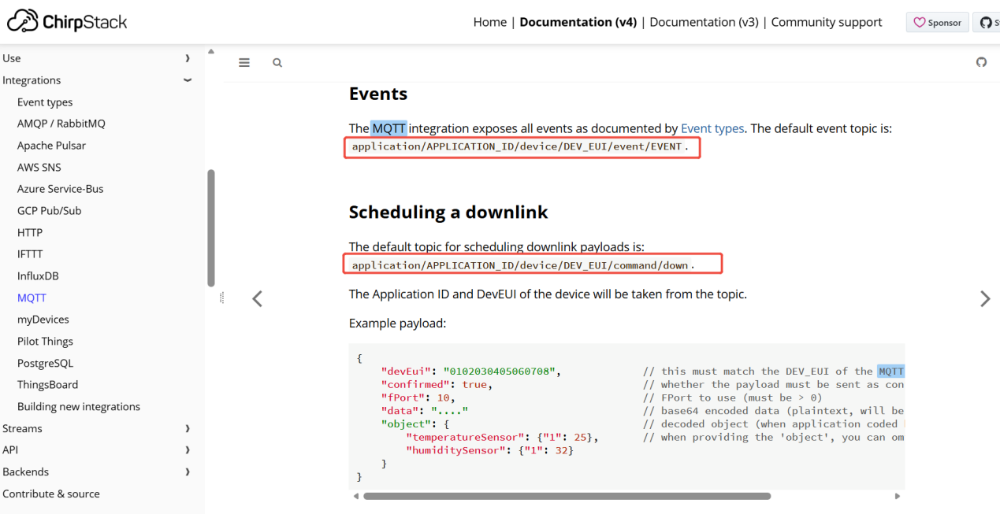
2. Check the Chirpstack server and topic information
For example: application/APPLICATION ID/device/DEVICE EUI/event/up
The DEVICE EUI belongs to the AM308, the device provide the co2 value to input DS3604; you can obtain it using the toolbox app.
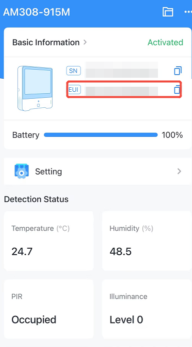
Application ID:
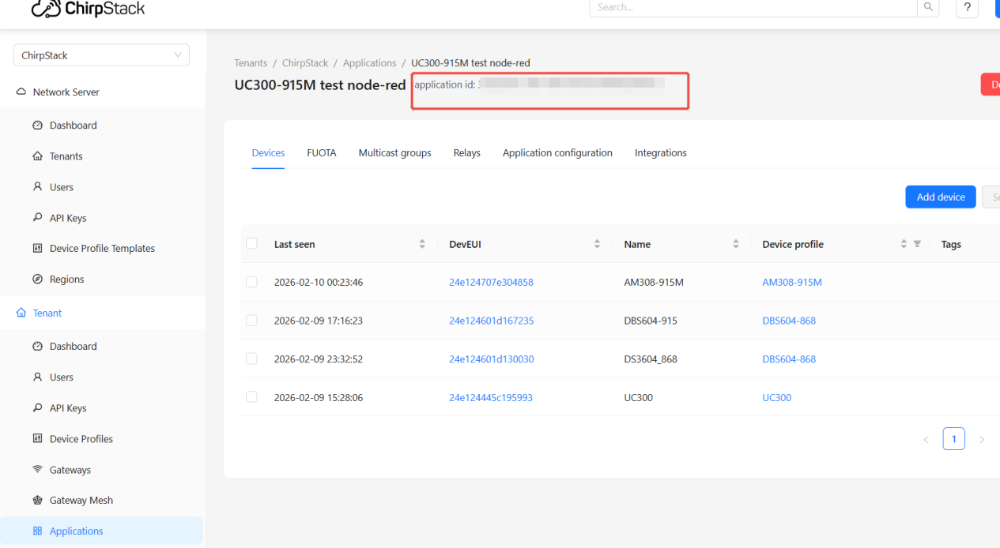
Device EUI
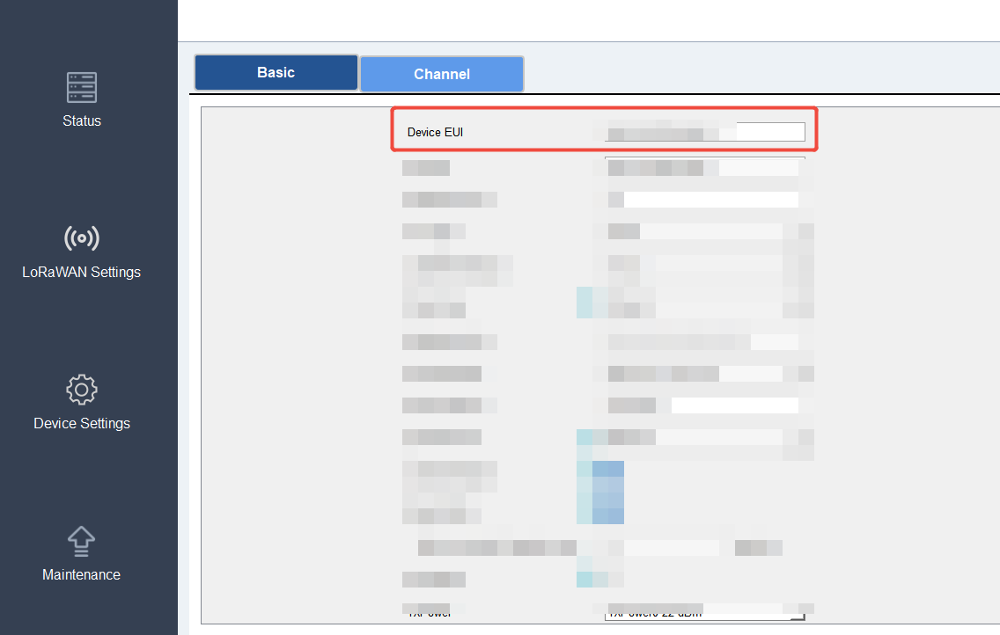
On Node-RED:
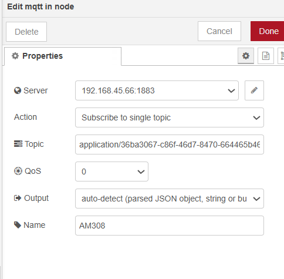
Step 5: Function module configuraion
This step uses JavaScript to extract the CO2 value, and then, according to the DS3604 downlink command documentation, formats it into a Base64-encoded downlink command.
3. About the download command, please check the document below:
ds3604-user-guide-en.pdf
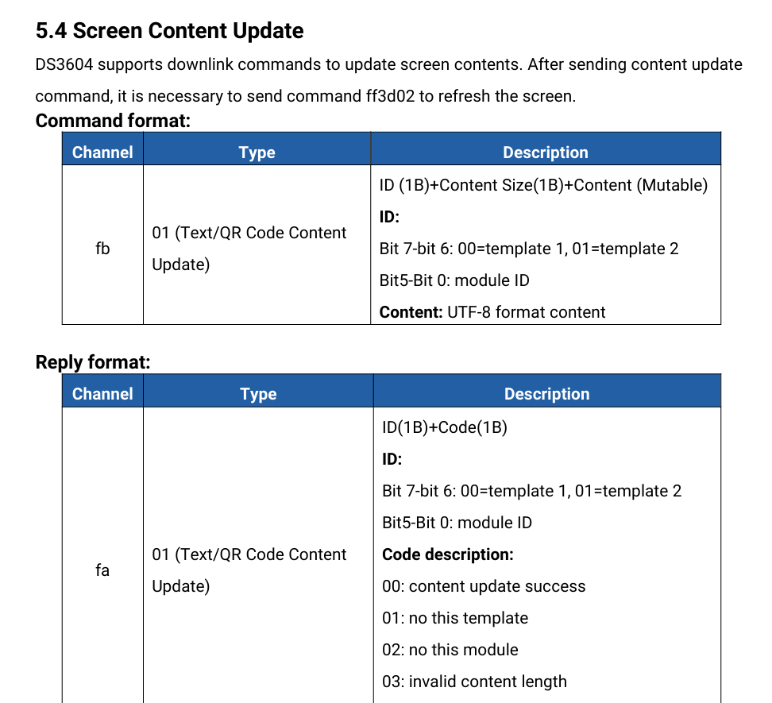
4. Node-RED script:
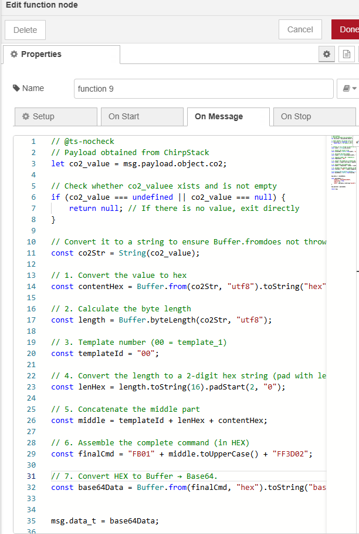
Step 6: MQTT out module configuraion
5. Check the Chirpstack server and topic information
For example: application/APPLICATION ID/device/DEVICE EUI/command/down
The DEVICE EUI belongs to the DS3604; you can obtain it using the toolbox app.
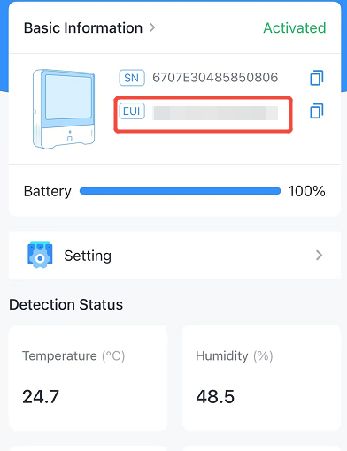 |
6. Node-RED information:
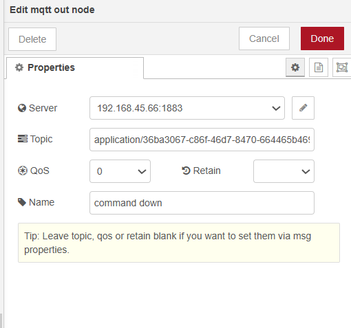
Step 7: Test Results Verification
Click the Deploy button to apply the changes, then verify that the real-time CO₂ value appears on the DS3604 display.
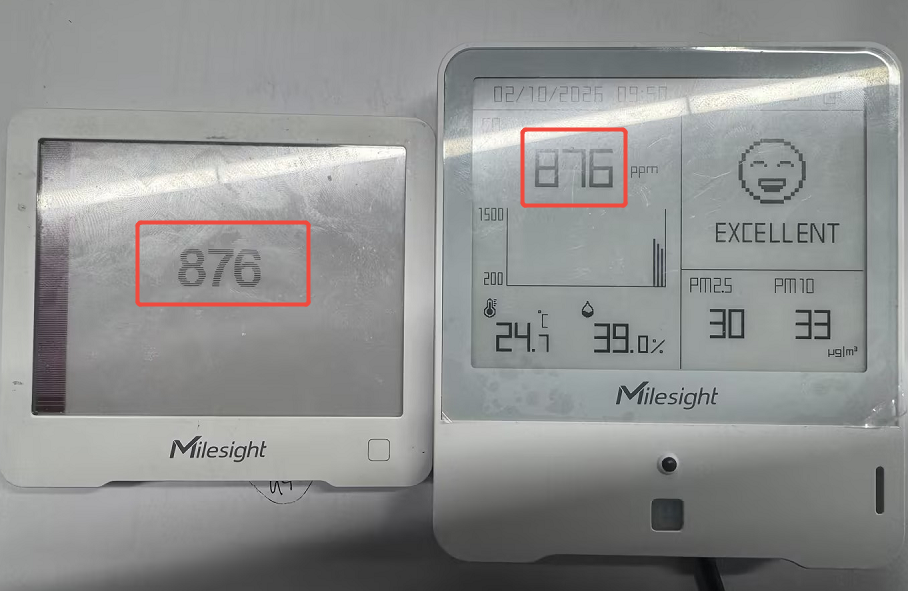
-------END-----